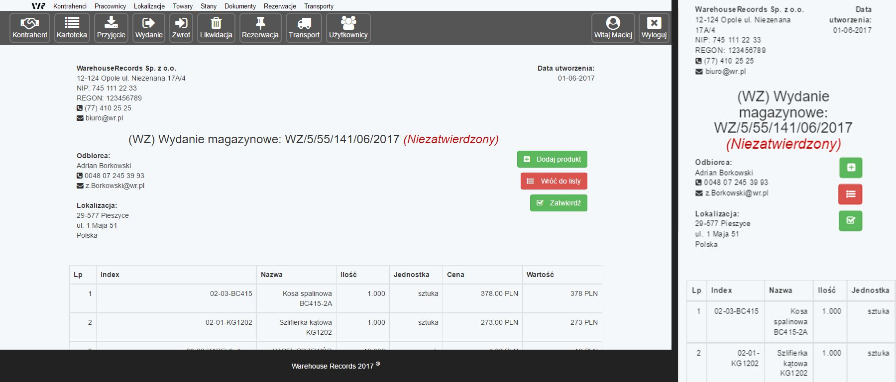
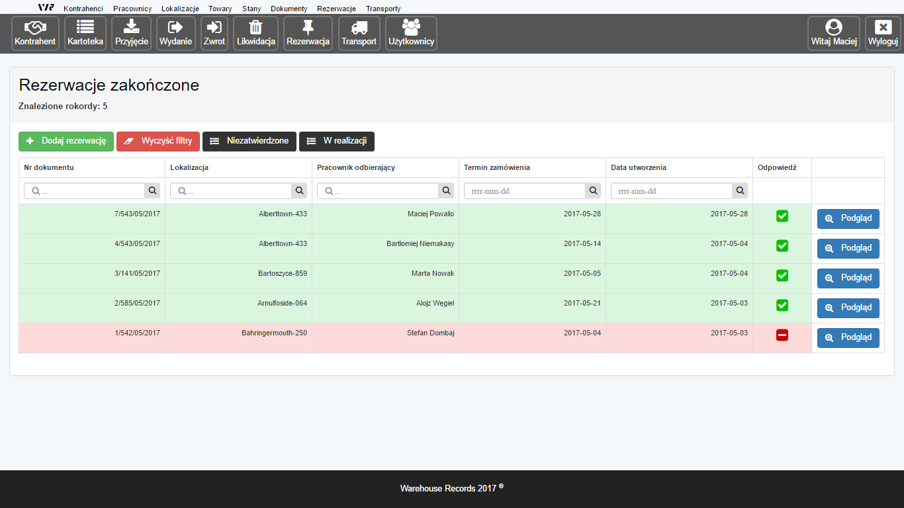
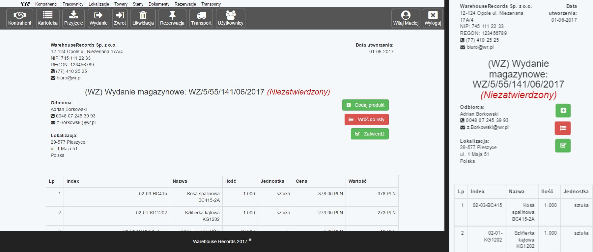
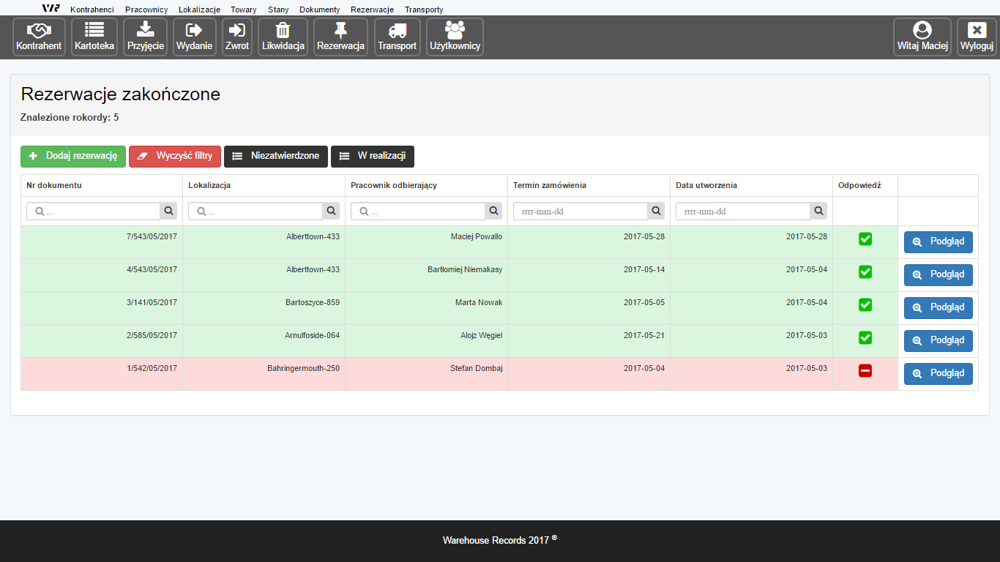

Reggae Polskie
Projekt strony internetowej
Strona dostępna pod adresem reggaepolskie.pl
Reggae Polskie jest pierwszą profesjonalną stroną, którą zaprojektowałem w 2010 roku. Przez lata ulegała licznym aktualizacjom oraz modyfikacjom. Obecnie trwają pracę nad przebudową strony, tak aby była zgodna z techniką RWD oraz opierała się o bazę danych.

- Data: sierpień 2010
- Kategoria: strony www
- Użyto:


 


